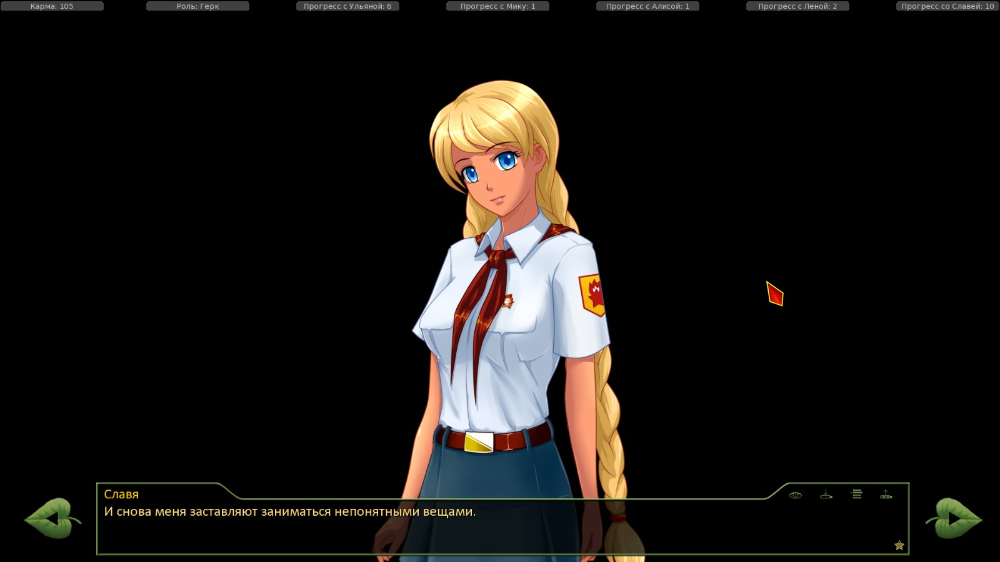
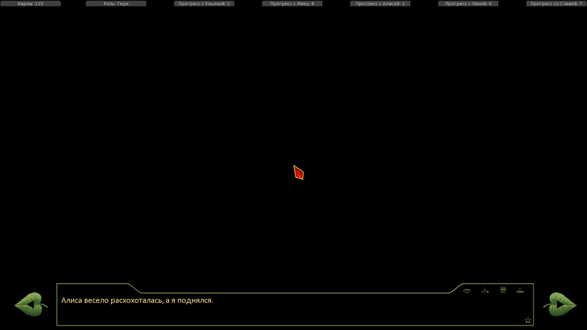
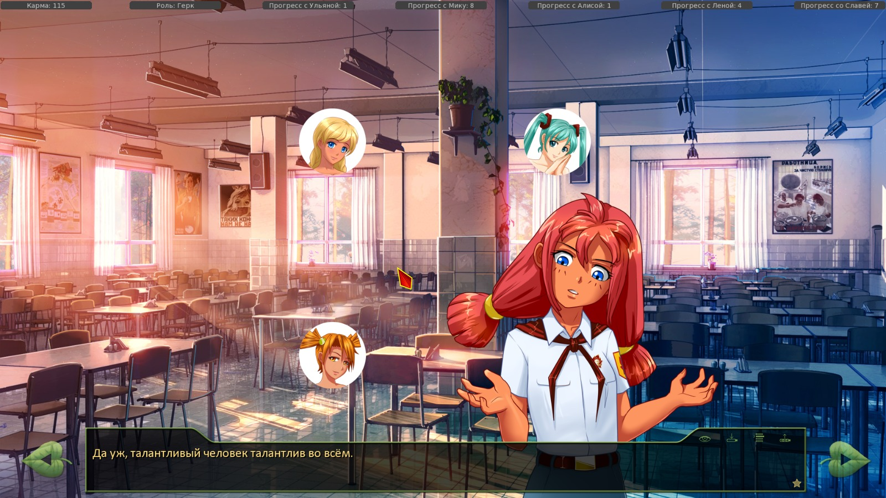
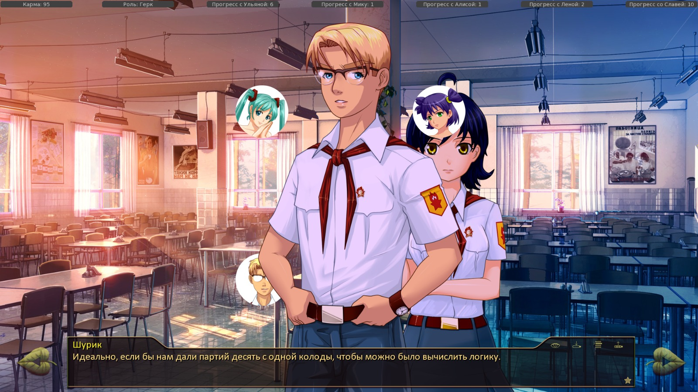
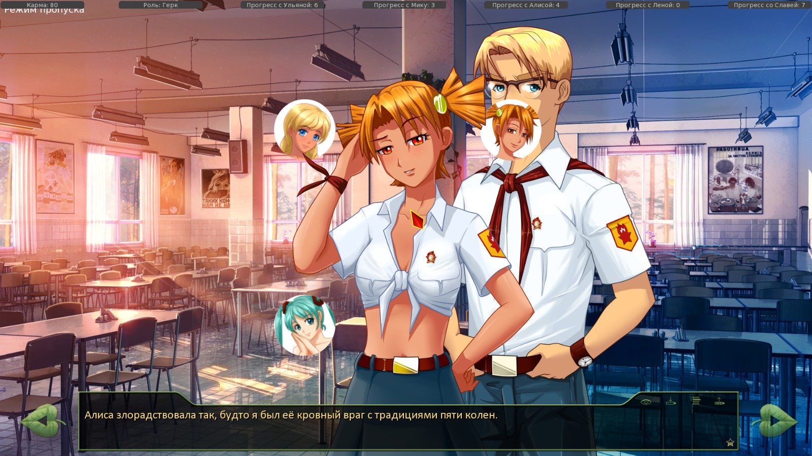

7 дней лета, билд 0.23d (Славя-классик, д.5)
Страница 4 из 11 •  1, 2, 3, 4, 5 ... 9, 10, 11
1, 2, 3, 4, 5 ... 9, 10, 11
Re: 7 дней лета, билд 0.23d (Славя-классик, д.5)
автор 7dl-kun в Чт 17 Сен 2015 - 2:05
"Неформальные" обязательства выглядят как те самые мышки, которые вусмерть уже обожрались несчастного кактуса. У Лены уже язык отсох посылать Семёна по бабушке, а он всё пристаёт и пристаёт. Я немного обыграл этот момент в д.5 и в турнире(если дать жужелице взять финал), спроецировав на Эла/Жужу.Arlien пишет:Ои! Мы просто спасаем Леночку от самовыпила! И вообще не брали на себя никаких формальных обязательств!

7dl-kun- Находка для шпиона

- Сообщения : 3026
Дата регистрации : 2014-09-07
Откуда : здесь столько наркоманов?
Re: 7 дней лета, билд 0.23d (Славя-классик, д.5)
автор Surv в Чт 17 Сен 2015 - 2:06
Я про это в курсе,но скорость 20-30кб не радует,по крайней мере вчера так было весь день.7dl-kun пишет:Скачать сборку, которую я раздаю/выложил на ЯД! Это абсолютно точно исправит проблему с непоявлением фонцов и заставок.Surv пишет:
А не подскажешь как это исправить?
Щас попробую перекачать с ЯД,за неё я точно уверен,с ней всё было в порядке пока я не начал мудрить с файлами
Surv- Хикка

- Сообщения : 114
Дата регистрации : 2015-06-06
Re: 7 дней лета, билд 0.23d (Славя-классик, д.5)
автор Dantiras в Чт 17 Сен 2015 - 3:14
№1 alt_res_card_shuffles Проигрыш в полуфинале карточного турнира (через игру в карты).
Все варианты, обыгрываемые в alt_day2_semifinal_fail (строки 1459-1596).
Суть проблемы
- Спойлер:


№2 alt_res_card_shuffles Проигрыш в полуфинале карточного турнира через выбор (см. код).
Строки 261-265
- Код:
"Поражение в полуфинале.":
call alt_day2_qf_analizer
$ alt_day2_round2 = 1
$ karma -= 10
jump alt_day2_semifinal_fail
- Спойлер:



Dantiras- Мизантроп

- Сообщения : 615
Дата регистрации : 2015-08-17
Re: 7 дней лета, билд 0.23d (Славя-классик, д.5)
автор Surv в Чт 17 Сен 2015 - 3:27
У меня была аналогичная проблема с фоном.Проблему решил скачав версию с ЯД по ссылке на вики.Скажу так,решило сразу все проблемы которые были.Dantiras пишет:Графика
№1 alt_res_card_shuffles Проигрыш в полуфинале карточного турнира (через игру в карты).
Все варианты, обыгрываемые в alt_day2_semifinal_fail (строки 1459-1596).
Суть проблемыОтсутствуют bg.
- Спойлер:
№2 alt_res_card_shuffles Проигрыш в полуфинале карточного турнира через выбор (см. код).
Строки 261-265Суть проблемы
- Код:
"Поражение в полуфинале.":
call alt_day2_qf_analizer
$ alt_day2_round2 = 1
$ karma -= 10
jump alt_day2_semifinal_failПри запуске alt_day2_qf_analizer не выводится bg турнирной сетки, а происходит наложение на имеющийся bg со спрайтом противника четвертьфинала. Далее на всё получившееся накладывается ещё и спрайт противника полуфинала.
- Спойлер:
Surv- Хикка
- Сообщения : 114
Дата регистрации : 2015-06-06
Re: 7 дней лета, билд 0.23d (Славя-классик, д.5)
автор Dantiras в Чт 17 Сен 2015 - 3:34
Дык, сколько уж можно качать. Со вчерашнего вечера, когда я перекачал искомую папочку, не думаю, что что-то изменилось в ней (учитывая надпись на ЯД: "Изменён: 15.09.2015 12:22").Surv пишет:
У меня была аналогичная проблема с фоном.Проблему решил скачав версию с ЯД по ссылке на вики.Скажу так,решило сразу все проблемы которые были.
ПыСы. Я эту проблему обнаружил ещё в 0.22с версии, но из-за забагованности всего турнира в целом решил не выкладывать пока, дабы не усугублять трудности с починкой текстовой части карт.
- Скрин с версии 0.22с:

Dantiras- Мизантроп
- Сообщения : 615
Дата регистрации : 2015-08-17
Re: 7 дней лета, билд 0.23d (Славя-классик, д.5)
автор Chess в Чт 17 Сен 2015 - 13:23
Это афигенно. Вот, стало быть, почему Шурик из котокомб по стене вылетел, вон как оно "изнутри" выглядит...

Chess- Находка для шпиона
- Сообщения : 3798
Дата регистрации : 2014-10-05
Откуда : Город на краю света
Re: 7 дней лета, билд 0.23d (Славя-классик, д.5)
автор 7dl-kun в Чт 17 Сен 2015 - 13:56
7dl-kun- Находка для шпиона
- Сообщения : 3026
Дата регистрации : 2014-09-07
Откуда : здесь столько наркоманов?
Re: 7 дней лета, билд 0.23d (Славя-классик, д.5)
автор Chess в Чт 17 Сен 2015 - 14:19
Chess- Находка для шпиона
- Сообщения : 3798
Дата регистрации : 2014-10-05
Откуда : Город на краю света
Re: 7 дней лета, билд 0.23d (Славя-классик, д.5)
автор BlackDoomer в Пт 18 Сен 2015 - 1:11
alt_route_sl_cl_2.rpy
строка 429: "Итак, господа и дамы, спешу представить вашему вниманию С. Персунова..."
И дальше в тексте лезет Персунов, а не Сычёв.

BlackDoomer- Хикка
- Сообщения : 165
Дата регистрации : 2015-07-31
Откуда : СПб
Re: 7 дней лета, билд 0.23d (Славя-классик, д.5)
автор Dantiras в Пт 18 Сен 2015 - 1:48
alt_route_common Дежурство с Ульяной.
Строки 16639-16661 (далее представлен начальный отрывок кода)
- Код:
"Я улыбнулся её последним словам и двинулся в сторону площади."
if alt_day2_date == 1 or alt_day2_date == 12 or alt_day2_date == 131:
if alt_day2_club_join_musc:
"Ждала ли меня Мику — дело десятое, у меня куда более приоритетная цель."
else:
"Вот вожатая удивилась бы, узнав, что меня просила о чём-то."
"Я улыбнулся и навострил лыжи в сторону библиотеки."
Возможное решение: В указанных строках заменить alt_day2_date на проверку флага предстоящего утреннего эвента (alt_day3_mi_event, alt_day3_dv_event и т.д.).
P.S.: 16636 "А я отправился к воротам - не знаю, зачем. Прост." Запятая здесь лишняя
Dantiras- Мизантроп
- Сообщения : 615
Дата регистрации : 2015-08-17
Re: 7 дней лета, билд 0.23d (Славя-классик, д.5)
автор Arlien в Пт 18 Сен 2015 - 7:06
Ночной разговор с Виолой прямо противоречит содержимому "Здравствуй".
Так и запланировано?
Arlien- Людовед

- Сообщения : 1322
Дата регистрации : 2014-09-08
Re: 7 дней лета, билд 0.23d (Славя-классик, д.5)
автор 7dl-kun в Пт 18 Сен 2015 - 9:37
7dl-kun- Находка для шпиона
- Сообщения : 3026
Дата регистрации : 2014-09-07
Откуда : здесь столько наркоманов?
Re: 7 дней лета, билд 0.23d (Славя-классик, д.5)
автор Dantiras в Пт 18 Сен 2015 - 11:44
Музыка
Строки 3551-3827
- Код:
$ persistent.sprite_time = "sunset"
"Двухъярусная кровать с толстым слоем пыли - демонстрирующая, что на ней никогда не спали, уголок радиста и индивидуальные шкафчики, один из которых был распахнут."
"Что удивительно - сюда до сих пор подавалось электричество! Даже системы вытяжки - топорные, советского производства - ощутимо гудели из-под потолка."
play sound sfx_radio_tune fadein 0
Правописание
751 "Славя обладала тем самым мудрым умением слушать, издавая ровно необходимое количество сочувствующих вздохов и угуканий, чтобы и не создавать впечатления, что я стене всё это рассказаываю, и одновременно не сбивать с мысли."
798 "Славя жарко покраснела - так, что слёзы на глазах выступили и старательно ковыряла пальцем стул, на котором сидела." После "выступили" нужны тире или запятая
825 th "Не надо думать, что я не умею ценить доброту. Или что оценил твои действия будто ты на меня как на падаль набросилась." После "действия" нужна запятая
3345 me "Да я немного знаю о том, как строят в союзе на таких вот строительствах. Туннели могут длиться километрами. Не хотелось бы, чтобы наше путешествие затянулось." Речь о государстве. Значит, "Союз" нужно с заглавной буквы
Dantiras- Мизантроп
- Сообщения : 615
Дата регистрации : 2015-08-17
Re: 7 дней лета, билд 0.23d (Славя-классик, д.5)
автор 7dl-kun в Пт 18 Сен 2015 - 12:20
Запрашиваю ваш фид по послесловиям в РФ и гуд-РФ концовке Алисы в частности.
7dl-kun- Находка для шпиона
- Сообщения : 3026
Дата регистрации : 2014-09-07
Откуда : здесь столько наркоманов?
Re: 7 дней лета, билд 0.23d (Славя-классик, д.5)
автор Dantiras в Пт 18 Сен 2015 - 18:25
- Краш:
- I'm sorry, but an uncaught exception occurred.
While running game code:
File "game/scenario_alt/Scenario/Done/alt_route_dv_7dl.rpy", line 12935, in script
NameError: name 'icq_name' is not defined
-- Full Traceback ------------------------------------------------------------
Full traceback:
File "C:\Users\Dantiras\Desktop\everlasting_summer-1.1\renpy\execution.py", line 288, in run
node.execute()
File "C:\Users\Dantiras\Desktop\everlasting_summer-1.1\renpy\ast.py", line 455, in execute
renpy.exports.say(who, what, interact=self.interact)
File "C:\Users\Dantiras\Desktop\everlasting_summer-1.1\renpy\exports.py", line 803, in say
who(what, interact=interact)
File "C:\Users\Dantiras\Desktop\everlasting_summer-1.1\renpy\character.py", line 778, in __call__
who = renpy.python.py_eval(who)
File "C:\Users\Dantiras\Desktop\everlasting_summer-1.1\renpy\python.py", line 1338, in py_eval
return eval(py_compile(source, 'eval'), globals, locals)
File "<none>", line 1, in <module>
NameError: name 'icq_name' is not defined
Windows-7-6.1.7601-SP1
Ren'Py 6.16.3.502
Everlasting Summer 1.0
Dantiras- Мизантроп
- Сообщения : 615
Дата регистрации : 2015-08-17
Re: 7 дней лета, билд 0.23d (Славя-классик, д.5)
автор 7dl-kun в Пт 18 Сен 2015 - 18:53
7dl-kun- Находка для шпиона
- Сообщения : 3026
Дата регистрации : 2014-09-07
Откуда : здесь столько наркоманов?
Re: 7 дней лета, билд 0.23d (Славя-классик, д.5)
автор Arlien в Пт 18 Сен 2015 - 19:18
- чутка вдогонку по Сл-кл:
4401 нужно убрать под элс чуть выше
Вечерний разговор с Виолой дня 5 в некоторой мере дублирует тот же из 4-ого дня ФЗ, наверное, там нужна альтерация, хотя бы небольшая, мол, "Я тебе уже говорил, что..."
Под эксгибиционизмом я подразумевал события д.2, не д.5. Да-да, дурак, просто старался быть лаконичным. Именно из-за таких конфузов мои посты и раздуваются обычно до негуманных размеров.
Купашки из д.5, как мне кажется, имеют критически-важное значение для раскрытия образа и пускать на них стоит всех, включая ФЗшников.
- эпилоги:
12899 - запятая после "близнецов"
13450 - это дв говорит
Альтеры РФов заценил. Ничего не понял. Думаю.
Arlien- Людовед
- Сообщения : 1322
Дата регистрации : 2014-09-08
Re: 7 дней лета, билд 0.23d (Славя-классик, д.5)
автор 7dl-kun в Пт 18 Сен 2015 - 19:56
7dl-kun- Находка для шпиона
- Сообщения : 3026
Дата регистрации : 2014-09-07
Откуда : здесь столько наркоманов?
Re: 7 дней лета, билд 0.23d (Славя-классик, д.5)
автор Surv в Пт 18 Сен 2015 - 20:37
Спасибо за меню концовок!)
Surv- Хикка
- Сообщения : 114
Дата регистрации : 2015-06-06
Re: 7 дней лета, билд 0.23d (Славя-классик, д.5)
автор Arlien в Пт 18 Сен 2015 - 21:09
- Спойлер:
Поведение Слави в вечернем слоте д.2 я все еще нахожу вредным для развития персонажа, подробно аргументировал, почему, вот здесь.
Если вкратце, то никакой уместной мотивации для осознанного стриптиза для полузнакомого мальчика, не говоря уж о приглашении купаться, я представить себе не могу - кроме крупных протечек информации с соседних пластов, сиречь флагов гуд-эндов.
Так что это скорее 'намек' на то, что Карфаген таки должен быть разрушен, а дейт 2 переписан. Когда-нибудь.
А к ивенту с д.5 у меня никаких вопросов нет, там уже действительно можно и поиграться, и подразниться.
Arlien- Людовед
- Сообщения : 1322
Дата регистрации : 2014-09-08
Re: 7 дней лета, билд 0.23d (Славя-классик, д.5)
автор Dantiras в Пт 18 Сен 2015 - 21:34
Плохая концовка Алисы-7ДЛ Строка 13652
- Код:
me "Понимаешь, какая штука - это как на детекторе лжи, есть вещи, на которые реакция есть, а есть те, на которые тебе плевать. Например, фотография блондинки вызывает у меня нежность - но какую-то… Как у младшего брата, например."
Возможное решение Очередной if на эвент alt_day6_dv_7dl_sl_help2. Возможно, стоит добавить размышление о фотографии Виолы при соблюдении alt_day4_dv_7dl_portwine.
Пунктуация (Гуд-РФ Алисы)
12932 "Я говорил им «прощай», людям, машинам, духу города." Вместо запятой нужно двоеточие
Мнение о РФ-гуде Алисы
- Спойлер:
- Получился качественный шаг вперёд по сравнению с предыдущей гуд-РФ-концовкой. По началу воспринимается как плохая концовка, из которой веет безысходностью. Внезапная смена характера повествования с переключением на появление Алисы в РФ-мире получилась достаточно проникновенной, и не воспринимается оторванной от вступления в эту концовку. Перепад настроения у читателя удался; музыка подобрана, на мой взгляд, очень уместная и отлично дополняет ощущения от чтива.
Вопрос: почему вариант остаться в автобусе отправляет в РФ? Как же тогда Семён оказывается в автобусе по приезду в СССР-мир? Это не претензия, просто интересуюсь.
p.s. Реджект-РФ с новой картинкой теперь стал совсем хорошим.
- ...:
- Товарищ Автор. Зачем эти послепослесловия?.. Вы меня всерьёз обеспокоили тем, что разместили в концовке Лены. Я их случайно заметил ещё вчера, но думал, что это послесловие только к Лене. А увидев это и у Алисы и связав их воедино, становится за Вас страшно…
Dantiras- Мизантроп
- Сообщения : 615
Дата регистрации : 2015-08-17
Re: 7 дней лета, билд 0.23d (Славя-классик, д.5)
автор 7dl-kun в Пт 18 Сен 2015 - 22:18
Потому что автобус везёт Семёна домой, в его родную реальность. И если выпрыгнуть раньше — полная аналогия с выпрыгиванием с едущего транспорта.Dantiras пишет:
Мнение о РФ-гуде Алисы
- Спойлер:
Вопрос: почему вариант остаться в автобусе отправляет в РФ? Как же тогда Семён оказывается в автобусе по приезду в СССР-мир? Это не претензия, просто интересуюсь.
Dantiras пишет:
- ...:
- Спойлер:
- Без послесловий никак. Они привязаны на ключик к альтернативному первому дню, на финальное прохождение. К слову, у Мику в её "пришла к Сенечке домой" тоже послесловие имеется. Сюжетная необходимость. Тем более, вспоминаем, что альтернативный день хронологически проходится после всех рутов всех девочек, делаем выводы и вместо финта ушами с походом на рутосторону, топаем за ОТВЕТАМИ.
7dl-kun- Находка для шпиона
- Сообщения : 3026
Дата регистрации : 2014-09-07
Откуда : здесь столько наркоманов?
Re: 7 дней лета, билд 0.23d (Славя-классик, д.5)
автор Dantiras в Пт 18 Сен 2015 - 22:31
7dl-kun пишет:
- Спойлер:
- Спойлер:
- Я не про то, что они не нужны. Они отличные! У Мику я тоже увидел такое послесловие. Каждое из них оставляет кучу вопросов из серии ЧТО ЭТО БЫЛО. Как и в случае ОД-концовки у Алисы. После такого начинается желание включить СПГС и-таки найти эти ОТВЕТЫ. Если коротко - 10 из 10 за эти послепослесловия.
Т.е. он, выйдя из автобуса, потом "респаунится" в автобусе в спящем состоянии в СССР-мире?7dl-kun пишет:Потому что автобус везёт Семёна домой, в его родную реальность. И если выпрыгнуть раньше — полная аналогия с выпрыгиванием с едущего транспорта.Dantiras пишет:
Мнение о РФ-гуде Алисы
- Спойлер:
Вопрос: почему вариант остаться в автобусе отправляет в РФ? Как же тогда Семён оказывается в автобусе по приезду в СССР-мир? Это не претензия, просто интересуюсь.
Последний раз редактировалось: Dantiras (Пт 18 Сен 2015 - 22:38), всего редактировалось 1 раз(а)
Dantiras- Мизантроп
- Сообщения : 615
Дата регистрации : 2015-08-17
Re: 7 дней лета, билд 0.23d (Славя-классик, д.5)
автор Arlien в Пт 18 Сен 2015 - 22:35
- "Обеспокоили" - это точно сказано:
Я еще не слишком хорошо понял, что эти послепослесловия могут значить, но выглядят они как намек на то, что все РФ-концовки - это просто семеновские мечты И это... да, ауч. Но вполне в духе.
Arlien- Людовед
- Сообщения : 1322
Дата регистрации : 2014-09-08
Re: 7 дней лета, билд 0.23d (Славя-классик, д.5)
автор BlackDoomer в Пт 18 Сен 2015 - 22:44
BlackDoomer- Хикка
- Сообщения : 165
Дата регистрации : 2015-07-31
Откуда : СПб
Страница 4 из 11 • 1, 2, 3, 4, 5 ... 9, 10, 11